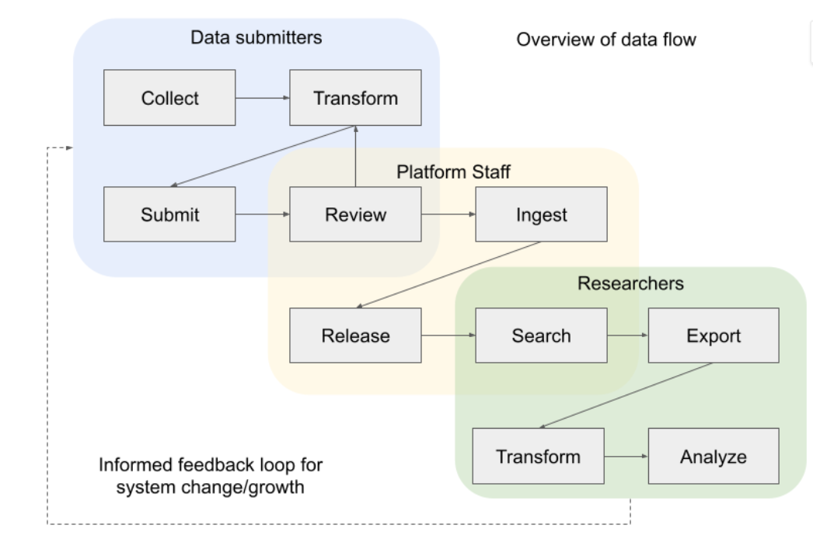

NCPI FHIR Implementation Guide
0.1.0 - ci-build
NCPI FHIR Implementation Guide - Local Development build (v0.1.0). See the Directory of published versions
The NIH Cloud Platform Interoperability effort is a collaboration about several NIH-funded platforms for cloud data analysis. Identifying a set of common use cases and a vision of better supporting researchers, these groups have been working towards making data more FAIR among these NIH projects. The NCPI FHIR Working Group has taken on the task of promoting interoperability of Clinical and Phenotypic Data and Study Metadata through the use of FHIR.
One of the major problems with making clinical and phenotype data available to the research community is the lack of universal standards for representing and transmitting this data. This variability creates challenges at every phase of the research process as there is overhead even to simply move the data from one task to another if it’s expected to be interpreted.

While there are standards and common data models, such as OMOP, that do allow for common representations, the source systems do not typically use them, and there are many local customization aspects that are challenging to merge.
FHIR presents an opportunity to make clinical and phenotypic data robustly available over APIs to the broader research community. The NCPI partners represent several of the best-equipped groups in the country to make this a reality for researchers, and alignment with dbGaP presents great opportunities for those continuing in existing models. This IG describes some ways in which FHIR can integrate with the current systems and what it can provide to supplement them and create opportunity for growth.
FHIR provides a way to have end-to-end consistency by providing methods to keep data representations accurate from data providers through the platforms and to data users and by providing a structured way to manage vocabulary information.